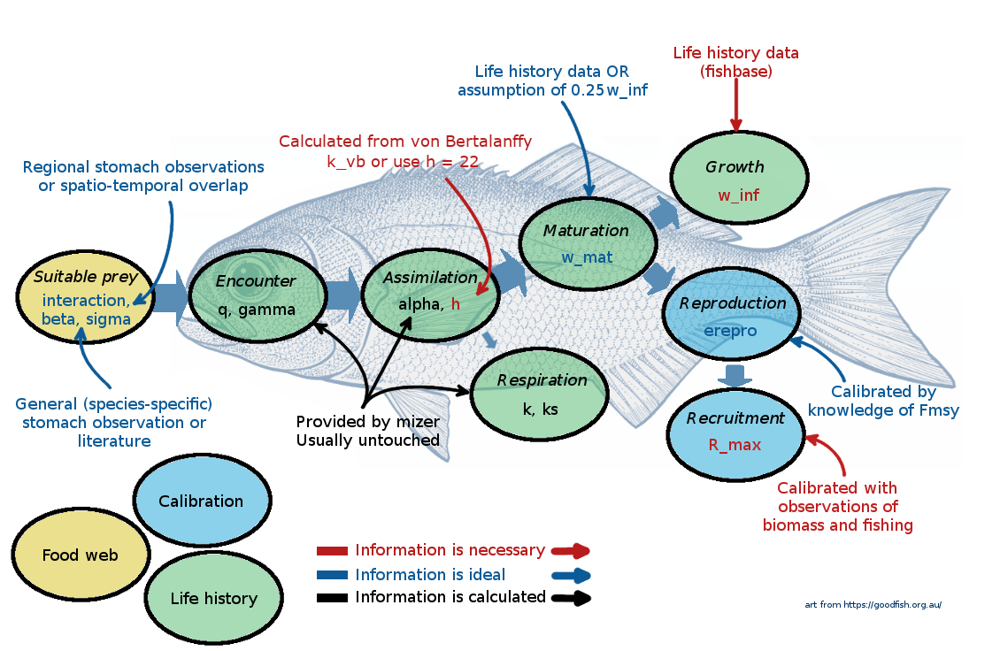

Collect parameters
In this tutorial we will discuss how to find the species-level information that goes into a mizer model. Perfect knowledge of the correct parameter values is impossible and judgement calls have to be made. We will invite you to make your own choices for the parameter values with which you will then build your first mizer model in the next tutorial.
In this tutorial we will also use functions from the rfishbase package which we will use to extract parameters from the huge FishBase data base.
Selecting model species
How do we decide which species to include in the model? There are many ways to approach this and no clearly set rules. Of course you want to include species that you are interested in, but then also perhaps some other important species in the ecosystem. You could select key ecosystem fish species that are commonly observed in scientific monitoring surveys, and which live and reproduce in the ecosystem (and ignore migratory species, which can be abundant briefly but don’t have a big role in the ecosystem overall).
It is a good idea to start with only a small number of key species. You can always add more species to an existing model at a later stage when the species become important to your modelling.
One good approach is to build on the efforts of others. There may already be a multi-species model in existence for your ecosystem and initially you could keep some of the choices made for that model. That is what we do in this tutorial. We want to build a model for the Celtic Sea. We build on a mizer model described in Spence et al. (2021). The model parameters are given in the supplementary material of that paper. James Martindale had the species parameters in a file and shared that with us. Let’s load that and print the list of parameter names.
download.file("https://github.com/gustavdelius/mizerCourse/raw/master/build/species_params_spence_et_al.rds",
destfile = "species_params_spence_et_al.rds") [1] "species" "beta" "sigma" "F0" "w_inf" "w_mat" "h"
[8] "ks" "k_vb" "Rmax" We are currently interested in the choice of species to include:
sp_spence$species [1] Herring Sprat Cod Haddock Whiting
[6] Blue whiting Norway Pout Poor Cod European Hake Monkfish
[11] Horse Mackerel Mackerel Common Dab Plaice Megrim
[16] Sole Boarfish
17 Levels: Blue whiting Boarfish Cod Common Dab European Hake ... WhitingWe see that Spence et.al. chose to model 17 fish species. This may not be the choice you would have made. For example they chose not to include any crustaceans. If Nephrops, lobsters or crabs play an important role in your fishery, you may want to add them. Feel free to add other species. But of course increasing the number of species increases the amount of work that you have to put into choosing species parameters.
You may wonder why we don’t simply stick with their model. Why do we want to build a model from scratch if one is already in existence? One answer is that we do not agree with all the choices made. For example the published model produces size spectra that are no in agreement with the observed size distribution in the landings. But even if you have no reason to doubt someone else’s model, you should still go through all the parameter choices yourself. In this spirit, we would also like to ask you to not follow all the choices we make in this tutorial but instead make choices following your own judgement. It will be interesting for you to see how much the model behaviour changes due to your own parameter choices.
The species parameters go into a data frame that must have one row for each species and should have a column named species that contains the name by which you like to refer to this species. These species names will be used in plot legends for example, so do not make them too long. We will just stick with the names chosen by Spence et.al. So let’s start to create our species parameter data frame by just selecting the species column from the data frame of Spence et.al.
sp <- select(sp_spence, species)We may later perhaps also choose to reuse some of the other parameters chosen by Spence et.al.
Now that we have our first column in our species parameter data frame we should already start a habit that will serve us well in the long run: always comment on how we chose the parameter values. So we’ll put the following comment on the species column:
comment(sp$species) <- "We follow the choice of species made by Spence et.al (2021) https://doi.org/10.1111/faf.12543"That way if years later we are wondering what made us choose to include these species, we can simply do
comment(sp$species)[1] "We follow the choice of species made by Spence et.al (2021) https://doi.org/10.1111/faf.12543"While common names are convenient for presentation, they are ambiguous. We can use rfishbase::common_to_sci() to look up all the latin names of all the species that might correspond to a common name. For example
herring_latin <- common_to_sci("Herring")Joining with `by = join_by(Subfamily, GenCode, FamCode)`
Joining with `by = join_by(FamCode)`
Joining with `by = join_by(Order, Ordnum, Class, ClassNum)`
Joining with `by = join_by(Class, ClassNum)`herring_latinAn easy way to find the latin name we want for our common species is to sort this table by SpecCode which will put the more common species towards the top.
arrange(herring_latin, SpecCode)We see that the non-uniqueness actually goes both ways. There are also several common names for the same scientific species.
After a little work we arrive at the correct scientific names of all our species and for later convenience we put them into our species data frame as well even though mizer will ignore them.
sp$latin_name <- c("Clupea harengus", # Herring
"Sprattus sprattus", # Sprat
"Gadus morhua", # Cod
"Melanogrammus aeglefinus", # Haddock
"Merlangius merlangus", # Whiting
"Micromesistius poutassou", # Blue whiting
"Trisopterus esmarkii", # Norway Pout
"Trisopterus minutus", # Poor Cod
"Merluccius merluccius", # European Hake
"Lophius piscatorius", # Monkfish
"Trachurus trachurus", # Horse Mackerel
"Scomber scombrus", # Mackerel
"Limanda limanda", # Common Dab
"Pleuronectes platessa", # Plaice
"Lepidorhombus whiffiagonis", # Megrim
"Solea solea", # Sole
"Capros aper") # BoarfishImportant species parameters
The following picture gives a summary of the most important species parameters. The colour of the labels indicates whether a parameter, needs to be provided (red), should be provided if possible (blue), or can be left at mizer’s default values (black).

At this point it might be useful to go back and re-watch the second half of Ken Andersen’s introductory lecture which explains species parameters used in mizer. It is great how mizer can start building a model with only very few species parameters! For most other parameters, if values are not supplied by the user, mizer will fill them with default values using size-based theory or species averages.
If you don’t like defaults you can change them all. You can find the complete list of species parameters used in mizer in the help page of species_params(). Advanced users can also overrule the way mizer uses allometric scaling relations. You can read about all the details in the help page for setParams().
Asymptotic size
The asymptotic size w_max is the size (in grams) at which all individuals of the species invest 100% of their energy income into reproduction and hence all growth stops. Due to variation between individuals, some individuals may stop growing earlier. So the w_max parameter in mizer is not the asymptotic size of an average individual but the maximum asymptotic size.
The best way to estimate this parameter is probably to look at what the largest fish is that has been caught in your study area. You may of course be fishing so hard that none of the fish grow to their asymptotic size and then the size of the largest caught fish would be an underestimate of the asymptotic size. But our estimate does not have to be perfect.
We have a data frame with observations of sizes of caught fish and can look through it for the largest sized fish of each species.
download.file("https://raw.githubusercontent.com/sizespectrum/mizerCourse/main/build/catch.csv",
destfile = "catch.csv")catch <- read.csv("catch.csv")
max_size <- catch |>
group_by(species) |>
summarise(l_max = max(length))
max_sizeWe see that we only had data for 12 of our 17 species. The species for which we still don’t have an estimate for the asymptotic size are
missing <- !(sp$species %in% max_size$species)
sp$species[missing][1] Norway Pout Poor Cod Mackerel Megrim Boarfish
17 Levels: Blue whiting Boarfish Cod Common Dab European Hake ... WhitingFor these we can use the maximum length recorded on FishBase in the “species” table.
max_size_fishbase <- rfishbase::species(sp$latin_name[missing]) |>
select(latin_name = Species, l_max = Length)Joining with `by = join_by(SpecCode)`max_size_fishbaseTo combine these two tables we first need them to have a common column. So we add a species column to max_size_fishbase . Then we stack the two tables with bind_rows() and keep only the species and l_max columns
max_size_fishbase <- max_size_fishbase |>
left_join(select(sp, species, latin_name),
by = "latin_name")
max_size <- bind_rows(max_size, max_size_fishbase) |>
select(species, l_max)
max_sizeThis table gives us the largest length for each species but mizer likes to use weight instead of length. To convert from length to weight we use the allometric length-weight relationship which says that the length l in cm and the weight w in grams of an average individual are related as:
w = a \cdot l^b
For many species the length-weight conversion coefficients a and b can be found on FishBase in the “estimates” table.
Joining with `by = join_by(SpecCode)`length_weightNote that fishbase is continuously updated and the values you get for the length-weight conversion coefficients will change over time. The values above are already different from the ones in November 2022 when this course was first written.
We can now add all this information to our species parameter data frame and use it to calculate the column we actually need, namely w_max.
sp <- sp |>
left_join(length_weight, by = c("latin_name" = "Species")) |>
left_join(max_size) |>
mutate(w_max = a * l_max ^ b)Joining with `by = join_by(species)`spEven though mizer will never use the l_max column, it does not hurt to keep it around.
Now it is time again to add comments to remind us of the origin of our parameters:
comment(sp$a) <- "Taken from the `a` column in the 'estimates' table on FishBase on 07/12/2023."
comment(sp$a) <- "Taken from the `b` column in the 'estimates' table on FishBase on 07/12/2023."
comment(sp$l_max) <- "See https://mizer.course.sizespectrum.org/build/collect-parameters.html#asymptotic-size "
comment(sp$w_max) <- "Calculated from `l_max` using weight-length parameters `a` and `b`."Growth parameters
Mizer needs some information about how fast a species grows. This is determined by the maximum intake rate and the feeding level. Mizer chooses a sensible default for the feeding level and you only need to give the coefficient h of the maximum intake rate. As Ken Andersen explains in his video at around minute 22:00, h is a nicer parameter for specifying growth than for example the von Bertalanffy K parameter. A species with an h larger than 22 is a fast-growing species, a species with h smaller than 22 is a slow-growing species.
The problem is that the values for h are not given on FishBase and you may thus struggle to find the appropriate value. I therefore propose that you specify instead both the size and the age at maturity. Mizer can then determine for you the value for h that allows the species to reach its maturity size at its maturity age.
We can get estimates of the maturity size and the maturity age from the “maturity” table on FishBase:
maturity_tbl <- rfishbase::maturity(sp$latin_name)Joining with `by = join_by(SpecCode)`maturity_tblYou can see that the table has many entries for each species with estimates from various locations and times and it is not clear how to combine all these estimates into a good estimate for our particular area. I am sure there will be a lot of debate about this at the course meetings.
Rather than with working with the above table inside R it might be a good idea to explore it on the FishBase website. For example here is the maturity page for Cod.
Here we will do something rather simple: we’ll just take the median values over all the observations where both the length at maturity Lm and the age at maturity tm are given:
median_maturity <- maturity_tbl |>
group_by(Species) |>
filter(!is.na(tm), !is.na(Lm)) |>
summarise(age_mat = median(tm),
l_mat = median(Lm))
median_maturityWe add this information to our species parameter data frame and also add a w_mat column.
sp <- sp |>
left_join(median_maturity, by = c("latin_name" = "Species")) |>
mutate(w_mat = a * l_mat ^ b)
comment(sp$l_mat) <- "Median of `Lm` over all observations on the 'maturity' table on FishBase that had both `Lm` and `tm`."
comment(sp$age_mat) <- "Median of `tm` over all observations on the 'maturity' table on FishBase that had both `Lm` and `tm`."
comment(sp$w_mat) <- "Calculated from `l_mat` using weight-length parameters `a` and `b`."We are not saying that this is a good way to get information on growth. A better way might be to analyse size-at-age data in an appropriate way. However we would warn against the temptation of using von Bertalannfy growth curve parameters because they describe a different kind of growth curve than the one mizer needs. We discussed this in a mizer blog post.
Predation kernel
We discussed the importance of the predation kernel previously. When thinking about the predation kernel it is important to realise that it expresses the degree to which a predator prefers to eat prey of a particular size. It does not express the size-distribution of the predator’s diet. That is obtained as the product of the size preference and the size-dependent abundance of prey. The predator may prefer to eat larger prey, but it will nevertheless end up eating more smaller prey because smaller prey are so much more abundant than larger prey.
By default, mizer uses a predation kernel that looks like a bell curve on the log w axis and we will keep this default for now. The most important parameter describing the bell curve is beta which gives the preferred predator/prey mass ratio. The default value for beta in mizer is beta = 30, which means that a predator has the highest preference for prey that weighs 30 times less than itself (remember that due to the higher abundance of smaller prey, the predator will end up eating prey that is smaller than its preference). However, higher beta values are appropriate for fish that feed on plankton or benthic invertebrates. The other parameter sigma describes the width of the bell curve on the logarithmic w axis.
For the Celtic Sea model we’ll just use the beta and sigma values that were used by Spence et.al.
Joining with `by = join_by(species)`Ideally we would use stomach content observations together with stable isotope analysis to estimate the predation kernels, but that will have to be the topic of a future tutorial, yet to be written.
Abundances
To calibrate the rate of reproduction (the rate at which eggs are entering the first size class in each species) in the steady state, mizer needs some information about species abundances or biomasses in the steady state. Of course the steady state is never observed in practice. However, it is reasonable to view the real world system as varying around the steady state so that averaging real-world observations over a number of years gives an estimate of the steady state.
Observed biomasses could be derived from scientific surveys, underwater surveys or other observations or knowledge about relative biomasses of species. In well studied systems you might have biomass estimates from stock assessments. These type of data are often used to calibrate mizer models, although we need to be aware of the fact that stock assessment estimates are also model estimates and come with their own assumptions (e.g. they are single species estimates).
If you do not know the biomass of a species, all is not lost. You can then assume that the abundance of that species is such that it combines correctly with the the other species to create a community spectrum that follows the Sheldon power law. For now you would just put NA into the corresponding entry in the biomass_observed column.
For the Celtic Sea model we can use ICES stock assessment reports by averaging the spawning stock biomass over a 10-year period (2012 - 2021). We decided to convert these biomasses to grams per square metre, which is the same as tonnes per square kilometre. Mizer is agnostic about the choice of area over which you want to measure biomasses. You just need to be consistent (see section Units in mizer in the mizer documentation).
One problem with using stock-assessment estimates is that they are usually given for the entire area that the stock exists in. This area is not usually identical with the Celtic Sea area that we are interested in. The assumption we have made here that the stock is uniformly distributed over its entire area is most certainly not justified. It would be better to make use of research trawl and landings data filtered down to the Celtic Sea area, in effect repeating stock-assessment but using the mizer model instead of a single-species stock-assessment model. We are working on developing such an approach.
Let us load in the estimates of spawning stock biomass that we obtained from the ICES reports by simply scaling them down to tonnes per square kilometre.
download.file("https://github.com/gustavdelius/mizerCourse/raw/master/build/celtic_sea_ssb.rds",
destfile = "celtic_sea_ssb.rds")The biomass estimates go into a biomass_observed column in the species parameter data frame.
Biomass estimates will only include individuals above a certain size, for example because the smaller individuals are not retained by our fishing gear. This cutoff size in grams you specify in the biomass_cutoff parameter. Because we are using an estimate of the spawning stock biomass, which includes individuals above the maturity size, we set biomass_cutoff to w_mat.
Exercise
You can help us to explore how sensitive the mizer model predictions will be to different choices of model parameters. If you try to make your own choices for the species parameter and then use them when building your own model and then use that model in part 3 of the course when we explore model predictions, you will get different predictions. It will be interesting to see how much the predictions differ.
So perhaps you want to pick different length-weight relationship parameters from fishbase or perhaps you have your own. Perhaps instead of maximum length you want to pick maximum weight from FishBase. Perhaps instead of taking the median over all observations of maturity size and maturity age on FishBase you first want to throw out some dubious ones. Or perhaps use a mean rather than a median. Or perhaps you want to directly pick values from studies particularly relevant to the Celtic Sea. Perhaps you know which values were used in the stock assessments for a species and can use those. Use your expertise and your intuition.
Don’t worry too much about the predation kernel parameters because we will return to those in the fourth tutorial of this section where we will look at the predator diets.
When you are happy with the species parameters, save them with
saveRDS(sp, "celtic_species_params.rds")Default parameters
There are many other parameters that are used to describe species properties, but which we have not provided in our species parameter data frame because mizer has default ways to calculate them based on the size theory expectations. You can read about the theory in various publications or in the excellent Ken H Andersen book “Fish Ecology, Evolution, and Exploitation” (2019). So you don’t need to provide them, but you do need to understand the defaults and think whether you are happy with them. Mizer help pages provide a good summary of species parameters and links to functions that use these parameters.
- There are four important allometric exponents used by mizer:
The maximum intake rate has a scaling exponent
n. Default is2/3.The metabolic rate has a scaling exponent p. Default is
0.7.The search volume has a scaling exponent q. Default is
lambda - 2 + n.The investment into reproduction by mature individuals as a scaling exponent m. Default is
1.
There is a lot of debate about the correct values for these exponents. Some schools of thought argue that energy intake should scale with individual's surface area (exponent of $2/3$) whereas energy expenditure should scale with body volume (exponent of $1$). Others suggest that food intake and metabolism exponents should both scale with $3/4$. There are no clear rules and these exponents in reality are likely to vary across species.The species search volume is set from the search rate constant
gammaand its body size scaling exponentq. If no value is provided,gammais set so that when prey abundance is described by the power law with the exponentlambda, the search volume will lead to a juvenile feeding level off0 = 0.6.The species metabolic rate is set from the metabolic rate constant
ksand its body size scaling exponentp. If no value is provided, the coefficientksis set so that at maturation size metabolic expenditure requires a critical feeding level offc = 0.2. Maintenance expenditure can also include activity related energetic costs, using species activity coefficientkwhich scales linearly with body size (exponent of 1). By default this value is set to 0.The external mortality rate (also called background or baseline mortality) is by default set to a size-independent constant
z0. If no values are provided mizer assumes that species with small maximum body sizes have much higher baseline mortality rate. For example, a species withw_max= 35 g will havez0= 0.18, a species withw_max= 150g will havez0= 0.11 and a species withw_max= 14kg will havez0= 0.025.We already discussed the parameters involved in setting the investment into reproduction previously. The reproduction investment exponent
mdetermines the scaling of the investment into reproduction for mature individuals. By defaultm= 1 which means that after maturation the rate at which individual fish invests energy into reproduction scales linearly with size (if you want more information, you can find it here). This default can be changed to another value if different scaling is preferred (e.g. in case you might want to explore hyper-allometric reproduction investment options). The steepness of population level energy allocation to reproduction is determined byw_mat25, the size at which 25% of individuals are mature.The species minimum body size in the model
w_minis by default set to 0.001 in grams, a typical size of a fish egg.We discussed the parameters
R_maxandereproin the section on How reproduction is modelled.You can also modify availability of the resource to each of your species, as we have learned earlier. This is set by the parameter
interaction_resourceand this value is set to 1 by default.Species food assimilation efficiency
alpha. If no value is provided mizer assumes 0.6.
If you want to change the default values for any of these parameters for any of the species, you just need to add a corresponding column to your species parameter data frame. You can put NA into those columns for the species where you want mizer to keep the default.
Species interaction matrix
By default, mizer assumes that all species can interact with each other equally and that predation is determined solely by size. To change this assumption we need to provide a species interaction matrix. This matrix can include three different aspects (or a combination of all of them):
- Spatial and temporal overlap of species in a large ecosystem. This way the interaction matrix is set based on species co-occurrences in various fisheries surveys or observations. In other words we observe how often a pair of species is found in same surveys. This is how species interactions are set up in the model by Spence et.al.(2021) and we will use their interaction matrix for our model:
download.file("https://raw.githubusercontent.com/gustavdelius/mizerCourse/master/build/celtic_interaction.csv",
destfile = "celtic_interaction.csv")celtic_interaction <- read.csv("celtic_interaction.csv", row.names = 1)
celtic_interactionWe use row.names = 1 to let read.csv know that the first column in the spreadsheet in “celtic_interaction.csv”, which contains the predator names, should be used as the names of the rows of the interaction matrix.
Species diet preferences or trophic groups. Sometimes we know that certain species do not eat other species. For example, some species are strictly bentivorous or herbivorous and they never eat any other fish, not even their larvae. In other cases we might have good evidence for specific diet preferences, although ideally such evidence should come from food selection experiments and these are very rare and maybe too specific to certain conditions. It is important to know that diet contents do not necessarily reflect preferences, but realised feeding. A species might prefer to eat bananas, but if nothing else is available it will eat other fish. The species interaction matrix, if reflecting diet preferences, should reflect preferred diets, not realised diets.
Species predator avoidance behaviour or vulnerability. Some species may be less available to other species because they are good at hiding, have spikes, or live in large schools which reduces their vulnerability to predation compared to solitary species. This could also be included in the species interaction matrix, but in the prey column.
If you do not have any information about such effects that modify species interactions then you should stay with the default interaction matrix which has all entries equal to 1.
Gear parameters
Because most ecosystems are fished and we are calibrating to biomasses observed under some fishing level, we usually also need to include information on fishing intensity and fishing gear.
In mizer you can implement an arbitrary number of different gears, each with its own fishing effort, fishing different species with different selectivity and catchability. Gear selectivity curves can have different shapes (logistic, knife-edge and others). You can read more about this here.
You provide the information about the gears in a data frame similar to the species parameter data frame. However the gear parameter data frame has one row for each gear-species combination. The data frame needs to have a column gear for the name of the gear and a column species for the name of the species. There are then further columns holding the information about how that gear selects that species. For details see the help page of gear_params().
For our initial model we have set up a simple gear parameter data frame describing only a single gear that we call “Commercial”. It targets all species in our model. The choice of parameters is again inspired by the paper by Spence et al.(2021)
download.file("https://raw.githubusercontent.com/gustavdelius/mizerCourse/master/build/celtic_gear_params.csv",
destfile = "celtic_gear_params.csv")celtic_gear_params <- read.csv("celtic_gear_params.csv")
celtic_gear_paramsWe model the size selectivity of the gear by a sigmoidal curve that is specified by giving the length l50 in cm at which 50% of the individuals are selected by the gear and the length l25 in cm at which 25% of the individuals are selected by the gear. For l50 we choose the maturity size l_mat and we set l25 to 95% of that to get a very steep selectivity curve.
The catchability column specifies how vulnerable the species are to commercial fishing. The fishing mortality rate at size for each gear is the product of the size-dependent selectivity, the catchability and the fishing effort. We will use the above gear with a fishing effort of 1, which means that the fishing mortality for the fully selected individuals will be equal to the catchability.
Summary
1) The species parameters are specified in a data frame with one row for each species and one column for each species parameter.
2) Only a species name and the maximum size w_max of each species is strictly required. But for a realistic model you should try to also provide estimates of the maturity size w_mat, the maturity age age_mat, the preferred predator prey mass ratio beta and the observed biomasses biomass_observed.
3) We briefly explained how mizer chooses defaults for many other parameters, often using allometric scaling assumptions.
4) If predation is determined not solely by size but also by species identity, we need to specify this in the interaction matrix.
5) Fishing can be set up with multiple gears, each possibly targeting multiple species. The parameters for these fishing gears are specified in a data frame with one row for each gear-species pair and one column for each parameter.